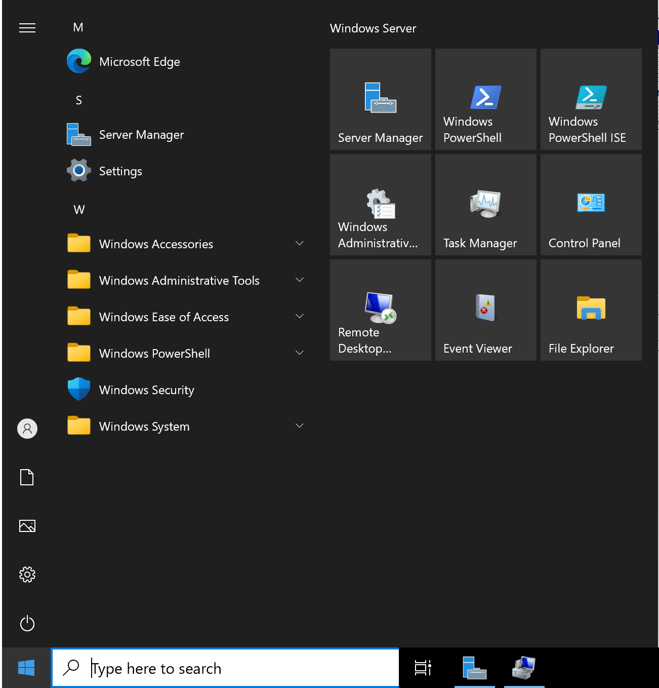
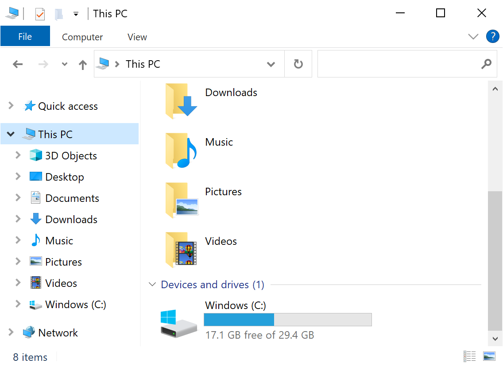
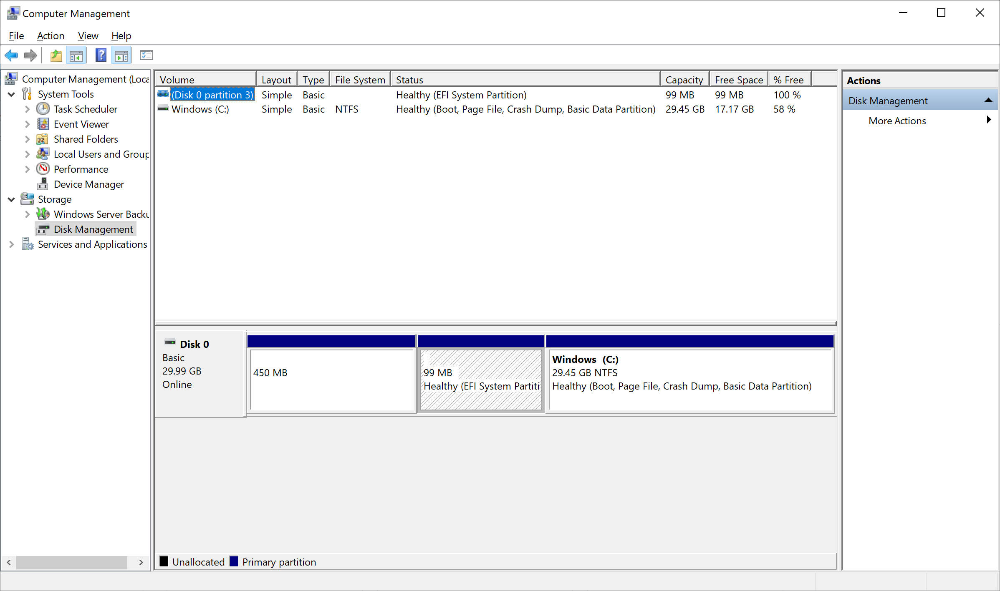

仮想マシンのディスク構成を確認する
適用対象: ✔️ 仮想マシン
この演習では、Azure ポータルを使用して 仮想マシンのディスク構成を確認します。
所要時間: 約 5 分
先行の演習
この演習を始める前に 仮想マシンにリモートデスクトップ接続する を完了してください。
タスク 1: エクスプローラーの確認
エクスプローラーで 仮想マシンのディスク構成を確認します。
- リモートデスクトップ接続で仮想マシンのデスクトップが表示されていることを確認します。
- スタートメニューを選択して [File Explorer] を選択します。

- エクスプローラーで 仮想マシンのディスク構成を確認します。

タスク 2: ディスクの管理の確認
ディスクの管理で 仮想マシンのディスク構成を確認します。
- リモートデスクトップ接続で仮想マシンのデスクトップが表示されていることを確認します。
- スタートメニューを右クリックして [Computer Management] を選択します。
- Storage ＞ [Disk Management] を選択します。
- ディスクの管理で 仮想マシンのディスク構成を確認します。
